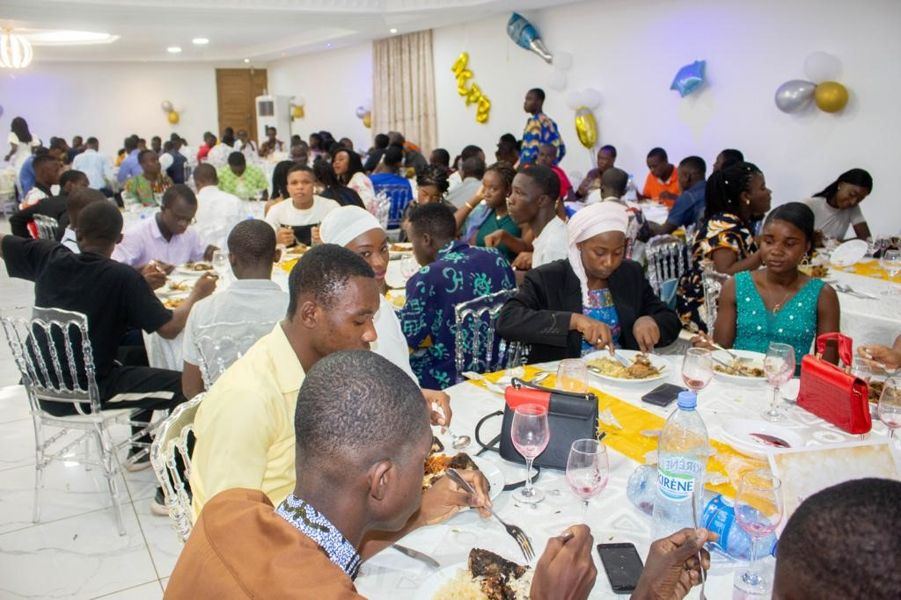

Une fête de bienvenue inoubliable : Défilés, nourriture, jeux et danse.

La fête de bienvenue est un événement marquant qui permet de rassembler les membres d'une communauté pour accueillir chaleureusement de nouveaux arrivants. Cette année, la fête de bienvenue organisée dans notre ville a été une véritable réussite. Avec des défilés de nourriture, des jeux passionnants et de la danse enivrante, cette journée restera gravée dans les mémoires de tous ceux qui y ont participé.
Un défilé de mode éblouissant :
Le défilé de mode a été l'attraction principale de la soirée. Les mannequins ont défilé avec grâce et élégance, arborant des tenues uniques qui ont captivé l'attention de tous les spectateurs. Les styles variaient du chic et sophistiqué à l'audacieux et excentrique, créant ainsi une diversité visuelle qui a su ravir le public. Les couleurs vives, les tissus luxueux et les détails minutieux ont donné vie aux créations, transportant les spectateurs dans un monde de mode enchanteur.
Une touche gastronomique délicieuse :
Bien que la nourriture n'ait pas été le point central de l'événement, elle a été soigneusement sélectionnée pour compléter l'expérience globale. Des bouchées gastronomiques exquises ont été préparées pour satisfaire les papilles des invités. Des plateaux élégamment présentés ont offert une variété de mets délicieux, des amuse-bouches raffinés aux desserts somptueux. Bien que la nourriture n'ait pas été le point fort de la soirée, elle a ajouté une dimension agréable à l'événement, permettant aux invités de se délecter de saveurs exquises entre les défilés.
Le programme de binômage : une connexion enrichissante
L'atmosphère animée et électrisante de l'événement a contribué à sa réussite. L'excitation était palpable alors que le programme de binomage etait en marche captivant le public, Les élèves sont jumelés par paire, mélangeant les fileules et les parrains. Cette initiative visait à encourager les interactions, les échanges d'idées et la collaboration entre les différents acteurs de l'événement. L'audience était remplie d'admiration et d'applaudissements pour les créateurs et les modèles, créant ainsi une énergie positive qui a envahi la salle. Des moments forts, la révélation des paires, ont suscité l'enthousiasme et l'émerveillement des spectateurs.
Conclusion :
La fête de bienvenue de cette année restera gravée dans nos mémoires comme un événement exceptionnel. Les défilés de nourriture ont ravi nos papilles, les jeux nous ont procuré des moments de plaisir et de compétition, et la danse a réuni les gens dans une atmosphère de célébration et de joie. Cet événement a été le reflet de notre communauté dynamique et diverse, mettant en valeur nos traditions, notre cuisine et notre amour du partage. Espérons que cette fête de bienvenue extraordinaire sera le point de départ d'une nouvelle ère.